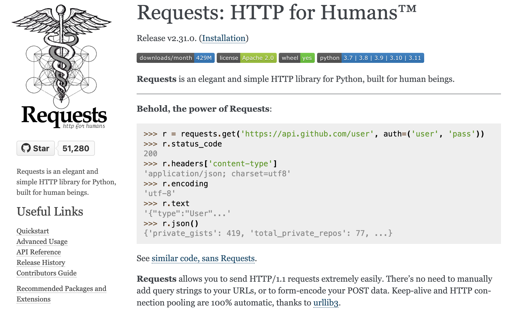

Data scraping requests
Acessando a WWW com Python¶
Existem várias bibliotecas em Python para interagir com o HTTP. requests e urllib são as duas bibliotecas que nos interessam por causa de seus recursos aprofundados, várias funções para lidar com comunicação HTTP, documentação de fácil leitura e popularidade.
Para começar a acessar a WWW com Python usando essas bibliotecas, vamos verificar se temos todos os recursos necessários instalados. Ccomeçaremos a configurar as coisas, criar um ambiente virtual, instalar bibliotecas no ambiente criado e acessar a web usando bibliotecas Python.
Biblioteca Requests¶
A biblioteca requests é uma das ferramentas mais populares em Python para realizar requisições HTTP de forma simples e intuitiva. Vamos explorar os conceitos básicos e como realizar as principais operaçõesHTTP com requests.

Instalação¶
Caso seja necessário é possivel realizar a instalação usando o gerenciador de pacotes do python, pip.
pip install requests
Progress
Continuar...
Métodos HTTP com requests¶
Os métodos HTTP são os verbos que indicam a ação que você deseja realizar em um recurso na web. Os mais comuns são:
GET: Solicita a representação de um recurso.POST: Envia dados para serem processados por um recurso.PUT: Atualiza um recurso existente ou cria um novo se não existir.DELETE: Remove um recurso.
Realizando uma Requisição GET¶
Uma requisição GET é usada para solicitar dados de um recurso específico. Com requests, você pode realizar uma requisição GET da seguinte maneira:
import requests
response = requests.get('https://requests.readthedocs.io/')
print(response.text)
Parâmetros de URL¶
É comum enviar parâmetros na URL de uma requisição GET. Com requests, você pode passar esses parâmetros como um dicionário:
import requests
# Definindo os parâmetros da consulta
params = {'userId': 1}
# Enviando uma requisição GET para a API
response = requests.get('https://jsonplaceholder.typicode.com/posts', params=params)
# Imprimindo a URL com os parâmetros de consulta
print(response.url)
# Imprimindo o conteúdo da resposta (os primeiros 5 posts do usuário com ID 1)
print(response.json())
Cabeçalhos¶
abeçalhos HTTP são usados para fornecer informações adicionais sobre a requisição ou a resposta. Eles podem incluir detalhes como o tipo de conteúdo esperado, o agente do usuário (User-Agent), informações de autenticação, entre outros. Com a biblioteca requests, você pode personalizar os cabeçalhos da sua requisição de maneira simples.
Adicionando Cabeçalhos à Requisição¶
Para adicionar cabeçalhos à sua requisição, você pode passar um dicionário contendo os cabeçalhos desejados para o parâmetro headers da função de requisição. Veja um exemplo:
import requests
# Definindo o cabeçalho da requisição
headers = {
'User-Agent': 'MeuApp/1.0',
'Accept': 'application/json'
}
# Enviando uma requisição GET para a API
response = requests.get('https://jsonplaceholder.typicode.com/posts/1', headers=headers)
# Imprimindo o conteúdo da resposta
print(response.json())
Neste exemplo, estamos enviando três cabeçalhos: User-Agent, Accept. O User-Agent identifica o cliente que está fazendo a requisição, o Accept indica o tipo de conteúdo que o cliente espera receber. Existem outros parametros que podem ser utilizados.
Acessando o Conteúdo da Resposta¶
O conteúdo da resposta pode ser acessado de várias formas, dependendo do tipo de dados esperados:
Texto: Para obter o conteúdo da resposta como uma string, você pode usar o atributo.text.Bytes: Se você precisa do conteúdo bruto da resposta em bytes, pode usar o atributo.content.JSON: Para respostas que retornam dados em formato JSON, você pode usar o método.json()para decodificar automaticamente o JSON para um objeto Python (geralmente um dicionário ou uma lista).
import requests
response = requests.get('https://www.uol.com')
print(response.url)
print("")
print(response.text)
print("")
print(response.content)
A resposta de uma requisição HTTP também contém cabeçalhos. Com a biblioteca requests, você pode acessar os cabeçalhos da resposta através do atributo .headers do objeto de resposta. Os cabeçalhos da resposta são retornados como um dicionário:
import requests
response = requests.get('https://www.uol.com')
print(response.headers)
content_type = response.headers['Content-Type']
print(content_type)
Status Code e Verificação de Erros¶
O status code da resposta indica o resultado da requisição HTTP. Você pode acessar o status code através do atributo .status_code do objeto de resposta:
import requests
response = requests.get('https://www.uol.com')
print(response.status_code)
É uma boa prática verificar se a requisição foi bem-sucedida antes de tentar acessar o conteúdo da resposta. Você pode fazer isso verificando se o status code está na faixa de sucesso (200-299):
if response.status_code == 200:
print("Requisição bem-sucedida!")
# Processar a resposta
else:
print("Erro na requisição:", response.status_code)
Questão 1
Utilize a biblioteca requests para fazer uma requisição GET ao seguinte endpoint da API de Chuck Norris e exiba a piada recebida:
-
Endpoint:
https://api.chucknorris.io/jokes/random -
Dica: acesse o endpoint diretamente pelo browser e avalie a estrutura da resposta, verifique se é json ou html a resposta. Nesta estrutura onde está a piada?
Answer
Para resolver esta questão, você pode usar o seguinte código:
import requests
response = requests.get("https://api.chucknorris.io/jokes/random")
piada = response.json()['value']
print("Piada:", piada)
Questão 2
Crie uma função em Python que utilize a biblioteca requests para buscar informações sobre um Pokémon específico na PokéAPI. A função deve receber o nome do Pokémon como argumento e retornar sua altura e peso.
-
Exemplo de endpoint:
https://pokeapi.co/api/v2/pokemon/pikachu -
Dica: nesse exemplo,
pikachué o nome do pokemon e deve ser um parametro da função que será substituido quando a função for chamada.
Answer
Uma possível solução para esta questão é a seguinte:
import requests
def get_pokemon_info(nome):
url = f"https://pokeapi.co/api/v2/pokemon/{nome}"
response = requests.get(url)
data = response.json()
altura = data['height']
peso = data['weight']
return altura, peso
nome = "pikachu"
altura, peso = get_pokemon_info(nome)
print(f"{nome} tem altura de {altura} e peso de {peso}.")
Questão 2 - Variação
Crie uma função em Python que utilize a biblioteca requests para buscar informações sobre um Pokémon específico na PokéAPI. A função deve receber o RM (Registro do Aluno) do aluno como argumento, somar os números do RM, e retornar as informações do Pokémon correspondente ao resultado da soma.
- Exemplo de endpoint:
https://pokeapi.co/api/v2/pokemon/{id} - Dica: Use o resultado da soma dos números do RM para substituir o
{id}no endpoint.
Progress
Continuar...
Enviando uma Requisição POST¶
Uma requisição POST é usada para enviar dados para um servidor para criar/atualizar um recurso. Em algumas requisições, como POST ou PUT, você pode precisar enviar um corpo com os dados. Com requests, você pode enviar o corpo da requisição de várias formas, incluindo como JSON:
import requests
def translate_text_libretranslate(text, target_language='pt'):
url = 'https://libretranslate.de/translate'
params = {
'q': text,
'source': 'en',
'target': target_language,
'format': 'text'
}
response = requests.post(url, data=params)
if response.status_code == 200:
translated_text = response.json()['translatedText']
print(f"Texto original: {text}")
print(f"Texto traduzido: {translated_text}")
else:
print("Erro na tradução:", response.status_code)
# Exemplo de uso
translate_text_libretranslate("Hello, how are you?")
Questão
Utilize a biblioteca requests para fazer uma requisição GET à API de piadas do Chuck Norris, obtendo uma piada em inglês. Em seguida, use a API do LibreTranslate para traduzir a piada para o português. Exiba a piada original e a traduzida.
- API de piadas do Chuck Norris:
https://api.chucknorris.io/jokes/random - API do LibreTranslate:
https://libretranslate.de/translate